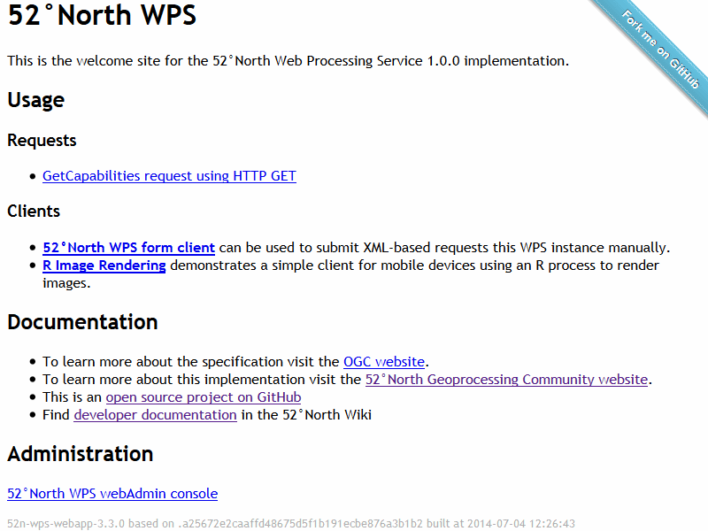

52 North WPS¶
Om¶
The 52°North Web Processing Service (WPS) enables web access to geospatial processing algorithms provided by Sextante, ArcGIS Server, R, GRASS 7, or custom developed functions. Algorithms may be as simple as determining the difference in influenza cases between two different seasons, or as complicated as a global climate change model.


Kärnfunktioner¶
Grundläggande GIS-funktioner:
SimpleBufferAlgorithm
DouglasPeuckerAlgorithm
IntersectionAlgorithm
AddRasterValuesAlgorithm
CoordinateTransformAlgorithm
Backend-algoritmer som är tillgängliga via:
Sextante
ArcGIS Server
R
GRASS 7
Indata- och utdataformat som stöds:
Vektordata: GML2, GML3, SHP-filer, KML, WKT (välkänd text), DGN, JSON
Rasterdata: geotiff, AsciiGrid, NetCDF, JPEG, PNG, HDF-EOS, ERDAS HFA
Utdata kan lagras i GeoServer/MapServer
En webbläsarbaserad klient
Implementerade standarder¶
OGC GML2 SimpleFeatures
OGC GML3 SimpleFeatures
Detaljer¶
Website: https://52north.org/software/software-projects/wps
Licens: GPL 2
Programvaruversion: 3.6.3
Plattformar som stöds: Windows, Linux, Mac
Kommersiellt stöd: https://52north.org/services/
Övriga 52°North projekt: SOS